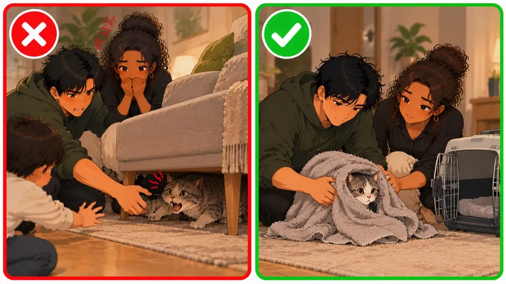

Μη χάνετε χρόνο διαβάζοντας αν το ζώο είναι αναίσθητο ή δεν αναπνέει — καλέστε αμέσως κτηνίατρο.
Τραυματισμός από παιδιά: πρώτες βοήθειες και πρόληψη
Αν ένα παιδί πέταξε, έριξε κάτω ή έσφιξε δυνατά τη γάτα και μετά εκείνη αιμορραγεί από το στόμα, είναι πολύ εξασθενημένη ή απαθής ή ψάχνει ζεστασιά, πρόκειται για κρίσιμη κατάσταση. Τέτοια σημάδια δείχνουν με μεγάλη πιθανότητα σοβαρές εσωτερικές κακώσεις: κρανιοεγκεφαλική κάκωση, βλάβη εσωτερικών οργάνων (πνευμόνων, ήπατος), εσωτερική αιμορραγία ή κατάγματα της γνάθου ή των πλευρών.
Επικίνδυνα λάθη
- Μπάνιο σε γάτα που βρίσκεται σε σοκ. Το πλύσιμο είναι τεράστιο στρες. Στο τραυματικό σοκ η θερμοκρασία του σώματος πέφτει γρήγορα, και το μπάνιο επιδεινώνει την υποθερμία και το σοκ και μπορεί να οδηγήσει σε αναπνευστική ή καρδιακή ανακοπή.
- Αυτοθεραπεία με συμβουλές από το διαδίκτυο. Ο χρόνος που χάνεται ψάχνοντας πληροφορίες ενώ υπάρχουν σημάδια εσωτερικής αιμορραγίας ή σοκ απειλεί άμεσα τη ζωή του ζώου. Τα φάρμακα για ανθρώπους χωρίς συνταγή κτηνιάτρου είναι συνήθως τοξικά για τα ζώα: η παρακεταμόλη και η μεταμιζόλη, για παράδειγμα, είναι θανατηφόρες για τις γάτες.
Μέρος 1. Πρώτες βοήθειες
Αν υποψιάζεστε σοβαρό τραυματισμό, το κύριο μέλημα είναι να μη βλάψετε και να πάτε τη γάτα σε κλινική όσο πιο γρήγορα γίνεται.
Βήμα 1. Εξασφαλίστε ηρεμία
- Βάλτε τη γάτα σε ένα ήσυχο, σκοτεινό και καλά αεριζόμενο δωμάτιο.
- Τοποθετήστε τη σε κλουβί μεταφοράς ή σε γερό χαρτόκουτο με επίπεδο, σκληρό πάτο, στρωμένο με μαλακό ύφασμα.
- Μην την ταρακουνάτε, μην τη μαλώνετε, μην τη μετακινείτε συνεχώς και μην την παίρνετε αγκαλιά χωρίς λόγο.

Βήμα 2. Κρατήστε τη ζεστή
- Στο τραυματικό και στο υποογκαιμικό σοκ ο οργανισμός χάνει γρήγορα θερμότητα.
- Σκεπάστε προσεκτικά τη γάτα με μια ελαφριά κουβέρτα ή μια πετσέτα.
- Αν τα πόδια και τα αυτιά είναι κρύα (σημάδι υποθερμίας), βάλτε δίπλα της ένα μπουκάλι με χλιαρό νερό, πάντα τυλιγμένο σε χοντρό ύφασμα για να μην καεί. Μην την υπερθερμαίνετε και μη χρησιμοποιείτε πολύ ζεστό νερό.
Βήμα 3. Έλεγχος και υγιεινή
- Μην την πλένετε! Καμία επαφή με νερό.
- Αν υπάρχει ορατή εξωτερική αιμορραγία, πιέστε απαλά πάνω στο τραύμα μια αποστειρωμένη γάζα ή έναν καθαρό επίδεσμο.
- Βάλτε δίπλα της ένα μπολ με φρέσκο νερό. Ποτέ μη δίνετε νερό ή υγρή τροφή με το ζόρι: αν το αντανακλαστικό της κατάποσης έχει διαταραχθεί ή το κεφάλι έχει τραυματιστεί, η γάτα μπορεί να πνιγεί.
Βήμα 4. Επειγόντως στον κτηνίατρο
- Χρειάζεται εξέταση από κτηνίατρο αυτοπροσώπως χωρίς καθυστέρηση. Πηγαίνετε τη γάτα στην πλησιέστερη κτηνιατρική κλινική και μεταφέρετέ τη όσο πιο προσεκτικά μπορείτε.
- Αν είναι πρακτικά αδύνατο να φύγετε αμέσως, επικοινωνήστε επειγόντως με κτηνίατρο μέσω υπηρεσίας διαδικτυακής συμβουλευτικής: θα σας πει πώς να σταθεροποιήσετε την κατάσταση.
- Μη δίνετε κανένα φάρμακο από το οικιακό φαρμακείο μέχρι να το συστήσει ο κτηνίατρος.
Μέρος 2. Συζήτηση με το παιδί και πρόληψη
Η συμβίωση παιδιών και κατοικίδιων απαιτεί συνεχή επίβλεψη και συνεπή διαπαιδαγώγηση.
Βήμα 1. Εξηγήστε τις συνέπειες
- Μην τιμωρείτε το παιδί σωματικά και μη φωνάζετε: αυτό προκαλεί μόνο φόβο και επιθετικότητα, αλλά δεν διδάσκει κατανόηση.
- Μιλήστε σοβαρά, σαν ίσος προς ίσο. Εξηγήστε ότι η γάτα είναι ζωντανό πλάσμα και νιώθει πόνο όπως ένας άνθρωπος.
- Χρησιμοποιήστε συγκρίσεις που καταλαβαίνει το παιδί: «Θυμάσαι όταν έπεσες και πόνεσες; Η γάτα τώρα πονάει ακόμα περισσότερο, αλλά δεν μπορεί να το πει με λόγια».
Βήμα 2. Θέστε σαφείς κανόνες
Συμφωνήστε τα όρια και φροντίστε να τηρούνται:
- Άγγιγμα. Απαγορεύεται: να τη σφίγγει, να την πετάει, να τραβάει την ουρά, τα αυτιά ή τα πόδια. Επιτρέπεται: να χαϊδεύει την πλάτη απαλά και ελαφριά.
- Ξεκούραση και ύπνος. Απαγορεύεται: να την ξυπνάει, να τη βγάζει από το σπιτάκι ή την κρυψώνα της. Επιτρέπεται: να την αφήνει ήσυχη μέχρι να ξυπνήσει.
- Φαγητό και τουαλέτα. Απαγορεύεται: να της αποσπά την προσοχή, να την τρομάζει, να την ενοχλεί. Επιτρέπεται: απλώς να μην πλησιάζει τα μπολ και την άμμο.
- Επίβλεψη από ενήλικες. Απαγορεύεται: να μένουν παιδιά κάτω των 7 ετών μόνα με τη γάτα. Επιτρέπεται: κάθε επαφή μόνο παρουσία ενηλίκων.
Βήμα 3. Μάθετε του τη σωστή επαφή
- Δείξτε στο παιδί πώς να χαϊδεύει τη γάτα: προς τη φορά του τριχώματος, στο κεφάλι και στην πλάτη.
- Εξηγήστε ποια σημεία δεν αγγίζουμε: κοιλιά, πόδια, ουρά, μάτια και αυτιά.
- Μάθετέ του να κρατάει σωστά τη γάτα: το ένα χέρι στηρίζει το στήθος και το άλλο τα πίσω πόδια από κάτω, ώστε η γάτα να μην κρέμεται ποτέ στον αέρα.
Βήμα 4. Καλλιεργήστε την ενσυναίσθηση
- Εμπλέξτε το παιδί στην καθημερινή φροντίδα της γάτας ανάλογα με την ηλικία του.
- Αναθέστε του απλές δουλειές: να βάζει ξηρή τροφή στην ώρα της, να αλλάζει το νερό στο μπολ, να μαζεύει τα παιχνίδια.
- Επαινέστε το για τη φροντίδα και την τρυφερότητά του.
Το πιο σημαντικό
Όλη η ευθύνη για την υγεία του ζώου και για την ασφαλή επαφή του παιδιού με τη γάτα ανήκει στους ενήλικες. Τα παιδιά δεν μπορούν πάντα να υπολογίσουν τη δύναμή τους ούτε να καταλάβουν τις συνέπειες των πράξεών τους. Η δουλειά των γονιών είναι να δημιουργήσουν ένα ασφαλές περιβάλλον, να αντιδράσουν έγκαιρα όταν κινδυνεύει η υγεία του ζώου και να μάθουν στα παιδιά να φέρονται στα ζωντανά πλάσματα με φροντίδα και υπευθυνότητα.
Περισσότερα στην ενότητα
Οι πληροφορίες της εφαρμογής προέρχονται από ανοιχτές πηγές και από την εμπειρία ιδιοκτητών γατών. Δεν αντικαθιστούν τη συμβουλή και την εξέταση από κτηνίατρο. Τις αποφάσεις για την υγεία και τη φροντίδα του κατοικιδίου τις παίρνει ο ιδιοκτήτης του — αν έχετε οποιαδήποτε αμφιβολία, απευθυνθείτε σε κτηνίατρο.